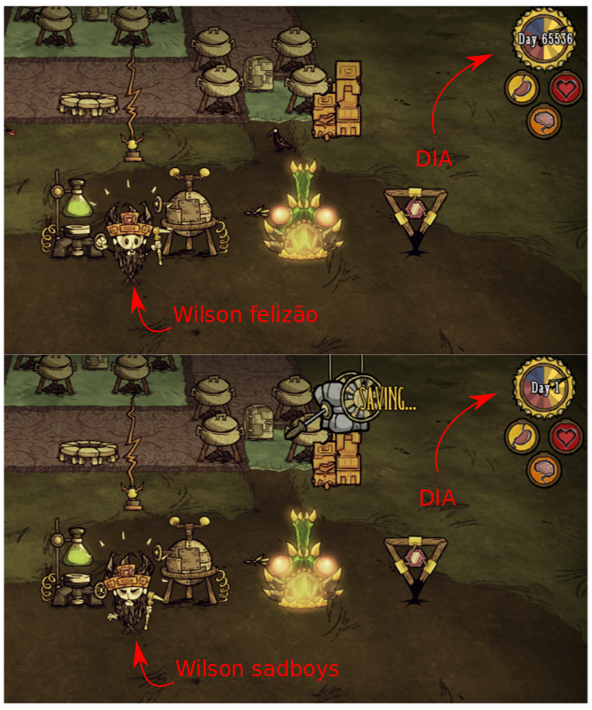

Há muitos anos, Wilson Percival Higgsbury chegou ao Constant depois de ser enganado pelo seu rival Maxwell, como pode ser visto aqui. Wilson é um jovem e talentoso cientista. No início, tudo no Constant era misterioso, mas depois de 936 anos sobrevivendo (pois cada ano lá dentro tem 70 dias), ele já descobriu até as limitações da engine que criou o jogo.
No dia 65537 (depois de ter sobrevivido 65536 dias) Wilson percebeu que o calendário passou a marcar “1” (que seria o dia 0), como dá pra ver nas imagens.

Isso aconteceu porque o inteiro sem sinal que armazena a quantidade de dias tem apenas 16 bits. Assim, quando mais um dia foi somado, o número “deu a volta” e zerou, aparecendo “Dia 1”.
Agora, Wilson precisa que você o ajude a implementar uma calculadora que consiga realizar operações entre números muito grandes. Os números devem ser inteiros sem sinal e as operações serão soma, subtração e multiplicação. Como o nosso cientista quer desenvolver uma boa ferramenta, é importante começar com um projeto conciso e no futuro aprimorar com novas funcionalidades. Nessa primeira versão, a calculadora deve suportar soma, subtração e multiplicação de numeros inteiros bem grandes, mas a divisão e operações com números racionais só serão implementadas nas próximas versões.
Critérios
As operações devem ser feitas com números armazenados na forma de lista ligada.
Entrada
A entrada é composta por várias linhas. A primeira linha contém um inteiro $n$ que indica a quantidade de casos de teste. Em seguida serão dadas $2n$ linhas, onde a primeira indicará a operação $op$ a ser realizada e a segunda conterá dois números $n_1$ e $n_2$ separados por um espaço.
O código $op$ representa uma das operações a seguir:
- +: soma
- -: subtração
- *: multiplicação
- /: divisão (opcional)
Restrições:
- 3 ≤ $n$ ≤ 110
- 0 ≤ $n_1, n_2$ ≤ $10^{24}$
- a subtração será sem sinal (resultado em módulo), por exemplo, $|1-10|=9$
- a divisão será inteira, por exemplo, $7 / 3 = 2$
- não haverá caso de teste com divisão por $0$
Exemplo de entrada
4
+
751796058999103512 894118966031226686
-
377631708972605051 46619653822740516
*
541644749181291169 747107029163164920
/
38531094373797137 575993551452481287
Saída
A saída do seu programa deverá apresentar $n$ linhas, onde cada linha conterá o resultado da operação realizada.
Exemplo de saída
1645915025030330198
331012055149864535
404666599422662049824112340086591480
0
Dica
Para desenvolver um bom programa, é importante desenvolver a ideia com calma. Antes de escrever uma função em C, pense na entrada e na saída do problema sendo resolvido e escreva seu algoritmo em português ou em pseudo-código de maneira clara. Faça alguns testes no papel até que tenha entendido e corrigido seu algoritmo completamente. Só depois, comece a escrever o código.
Implemente seu programa incrementalmente, teste-o e faça um commit a cada passo. Uma sugestão é começar implementando as funções básicas de lista ligada e as funções auxiliares para ler a entrada e para escrever a saída. Depois, implemente as operações da calculadora, uma por uma, começando pelas mais simples. A operação de divisão é opcional, então deixe-a por último.
O arquivo de Makefile de exemplo presume que seu programa se chama
calculadora.c. Se você decidir separar a implementação em mais de um
arquivo, lembre-se de fazer as devidas adaptações no Makefile.
Correção
Esta tarefa será corrigida automaticamente e por um monitor. O teste
automático será realizado sempre que você realizar um push. Para
indicar que a sua tarefa está pronta para a correção pelo monitor,
remova o arquivo nao_corrigir.txt do seu repositório antes de dar
commit.
A nota dependerá do número de casos de teste executados corretamente de acordo com a completude da tarefa. Das 6 entradas dos casos de teste fechados:
- há uma entrada para cada uma das operações de soma, subtração e multiplicação;
- há uma entrada que combina as operações de soma, subtração e multiplicação, que será avaliada com Valgrind;
- há uma entrada para a operação de divisão, mas ela não influenciará na nota;
- há uma entrada que combina todas as operações, que também não influenciará na nota.